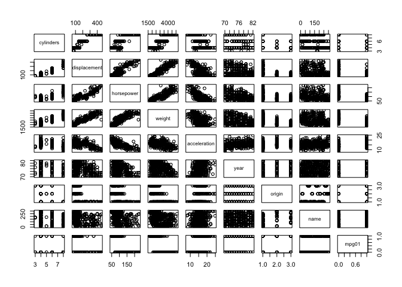

library("ISLR")
library("MASS")
library("class")
set.seed(0)
# Part (a):
Direction <- Weekly$Direction
Weekly$Direction <- NULL
Weekly$NumericDirection <- as.numeric(Direction) # Maps Down=>1 and Up=>2
Weekly$NumericDirection[Weekly$NumericDirection == 1] <- -1 # Maps Down=>-1 and Up=>2
Weekly$NumericDirection[Weekly$NumericDirection == 2] <- +1 # Maps Down=>-1 and Up=>+1
# Look at the correlation between the output and the input lags:
Weekly.cor <- cor(Weekly)
# b: logistic regression to predict Direction as a function of 5 lag variables + volume:
Weekly$NumericDirection <- NULL
Weekly$Direction <- Direction
five_lag_model <- glm(Direction ~ Lag1 + Lag2 + Lag3 + Lag4 + Lag5 + Volume, data = Weekly, family = binomial)
summary(five_lag_model)
##
## Call:
## glm(formula = Direction ~ Lag1 + Lag2 + Lag3 + Lag4 + Lag5 +
## Volume, family = binomial, data = Weekly)
##
## Deviance Residuals:
## Min 1Q Median 3Q Max
## -1.6949 -1.2565 0.9913 1.0849 1.4579
##
## Coefficients:
## Estimate Std. Error z value Pr(>|z|)
## (Intercept) 0.26686 0.08593 3.106 0.0019 **
## Lag1 -0.04127 0.02641 -1.563 0.1181
## Lag2 0.05844 0.02686 2.175 0.0296 *
## Lag3 -0.01606 0.02666 -0.602 0.5469
## Lag4 -0.02779 0.02646 -1.050 0.2937
## Lag5 -0.01447 0.02638 -0.549 0.5833
## Volume -0.02274 0.03690 -0.616 0.5377
## ---
## Signif. codes: 0 '***' 0.001 '**' 0.01 '*' 0.05 '.' 0.1 ' ' 1
##
## (Dispersion parameter for binomial family taken to be 1)
##
## Null deviance: 1496.2 on 1088 degrees of freedom
## Residual deviance: 1486.4 on 1082 degrees of freedom
## AIC: 1500.4
##
## Number of Fisher Scoring iterations: 4
contrasts(Weekly$Direction)
## Up
## Down 0
## Up 1
# c: the confusion matrix:
p_hat <- predict(five_lag_model, newdata = Weekly, type = "response")
y_hat <- rep("Down", length(p_hat))
y_hat[p_hat > 0.5] <- "Up"
CM <- table(predicted = y_hat, truth = Weekly$Direction)
CM
## truth
## predicted Down Up
## Down 54 48
## Up 430 557
sprintf("LR (all features): overall fraction correct= %10.6f", (CM[1, 1] + CM[2, 2])/sum(CM))
## [1] "LR (all features): overall fraction correct= 0.561065"
# d: logistic regression using only Lag2 as the predictor (since it is the most significant predictor)
Weekly.train <- (Weekly$Year >= 1990) & (Weekly$Year <= 2008) # our training set
Weekly.test <- (Weekly$Year >= 2009) # our testing set
lag2_model <- glm(Direction ~ Lag2, data = Weekly, family = binomial, subset = Weekly.train)
# CM on test data :
p_hat <- predict(lag2_model, newdata = Weekly[Weekly.test, ], type = "response")
y_hat <- rep("Down", length(p_hat))
y_hat[p_hat > 0.5] <- "Up"
CM <- table(predicted = y_hat, truth = Weekly[Weekly.test, ]$Direction)
CM
## truth
## predicted Down Up
## Down 9 5
## Up 34 56
sprintf("LR (only Lag2): overall fraction correct= %10.6f", (CM[1, 1] + CM[2, 2])/sum(CM))
## [1] "LR (only Lag2): overall fraction correct= 0.625000"
# e: Use LDA
lda.fit <- lda(Direction ~ Lag2, data = Weekly, subset = Weekly.train)
lda.predict <- predict(lda.fit, newdata = Weekly[Weekly.test, ])
CM <- table(predicted = lda.predict$class, truth = Weekly[Weekly.test, ]$Direction)
CM
## truth
## predicted Down Up
## Down 9 5
## Up 34 56
sprintf("LDA (only Lag2): overall fraction correct= %10.6f", (CM[1, 1] + CM[2, 2])/sum(CM))
## [1] "LDA (only Lag2): overall fraction correct= 0.625000"
# f: Use QDA
qda.fit <- qda(Direction ~ Lag2, data = Weekly, subset = Weekly.train)
qda.predict <- predict(qda.fit, newdata = Weekly[Weekly.test, ])
CM <- table(predicted = qda.predict$class, truth = Weekly[Weekly.test, ]$Direction)
CM
## truth
## predicted Down Up
## Down 0 0
## Up 43 61
sprintf("QDA (only Lag2): overall fraction correct= %10.6f", (CM[1, 1] + CM[2, 2])/sum(CM))
## [1] "QDA (only Lag2): overall fraction correct= 0.586538"
# g: KNN
X.train <- data.frame(Lag2 = Weekly[Weekly.train, ]$Lag2)
Y.train <- Weekly[Weekly.train, ]$Direction
X.test <- data.frame(Lag2 = Weekly[Weekly.test, ]$Lag2)
y_hat_k_1 <- knn(X.train, X.test, Y.train, k = 1)
CM <- table(predicted = y_hat_k_1, truth = Weekly[Weekly.test, ]$Direction)
CM
## truth
## predicted Down Up
## Down 21 29
## Up 22 32
sprintf("KNN (k=1): overall fraction correct= %10.6f", (CM[1, 1] + CM[2, 2])/sum(CM))
## [1] "KNN (k=1): overall fraction correct= 0.509615"
y_hat_k_3 <- knn(X.train, X.test, Y.train, k = 3)
CM <- table(predicted = y_hat_k_3, truth = Weekly[Weekly.test, ]$Direction)
CM
## truth
## predicted Down Up
## Down 15 19
## Up 28 42
sprintf("KNN (k=1): overall fraction correct= %10.6f", (CM[1, 1] + CM[2, 2])/sum(CM))
## [1] "KNN (k=1): overall fraction correct= 0.548077"
attach(Auto)
set.seed(0)
# Part (a):
mpg01 <- rep(0, dim(Auto)[1]) # 0 => less than the median of mpg
mpg01[Auto$mpg > median(Auto$mpg)] <- 1 # 1 => greater than the median of mpg
Auto$mpg01 <- mpg01
Auto$mpg <- NULL
# Part (b):
pairs(Auto)

Auto$mpg01 <- as.factor(mpg01)
# Part (c):
n <- dim(Auto)[1]
inds.train <- sample(1:n, 3 * n/4)
Auto.train <- Auto[inds.train, ]
inds.test <- (1:n)[-inds.train]
Auto.test <- Auto[inds.test, ]
# Part (d) Use LDA:
lda.fit <- lda(mpg01 ~ cylinders + displacement + weight, data = Auto.train)
lda.predict <- predict(lda.fit, newdata = Auto.test)
CM <- table(predicted = lda.predict$class, truth = Auto.test$mpg01)
CM
## truth
## predicted 0 1
## 0 42 1
## 1 5 50
sprintf("LDA: overall fraction correct= %10.6f", (CM[1, 1] + CM[2, 2])/sum(CM))
## [1] "LDA: overall fraction correct= 0.938776"
# Part (e): Use QDA:
qda.fit <- qda(mpg01 ~ cylinders + displacement + weight, data = Auto.train)
qda.predict <- predict(qda.fit, newdata = Auto.test)
CM <- table(predicted = qda.predict$class, truth = Auto.test$mpg01)
CM
## truth
## predicted 0 1
## 0 44 2
## 1 3 49
sprintf("QDA: overall fraction correct= %10.6f", (CM[1, 1] + CM[2, 2])/sum(CM))
## [1] "QDA: overall fraction correct= 0.948980"
# Part (f): Use Logistic regression:
lr.fit <- glm(mpg01 ~ cylinders + displacement + weight, data = Auto.train, family = binomial)
p_hat <- predict(lr.fit, newdata = Auto.test, type = "response")
y_hat <- rep(0, length(p_hat))
y_hat[p_hat > 0.5] <- 1
CM <- table(predicted = as.factor(y_hat), truth = Auto.test$mpg01)
CM
## truth
## predicted 0 1
## 0 43 3
## 1 4 48
sprintf("LR (all features): overall fraction correct= %10.6f", (CM[1, 1] + CM[2, 2])/sum(CM))
## [1] "LR (all features): overall fraction correct= 0.928571"
# Part (a):
Power <- function() {
print(2^3)
}
# Part (b):
Power2 <- function(x, a) {
print(x^a)
}
set.seed(0)
n <- dim(Boston)[1]
# Introduce a variable whether or not the crime rate is above=1 / below=0 the median
Boston$crim01 <- rep(0, n)
Boston$crim01[Boston$crim >= median(Boston$crim)] <- 1
Boston$crim <- NULL
# Look to see what features are most strongly correlated with crim01:
Boston.cor <- cor(Boston)
print(sort(Boston.cor[, "crim01"]))
## dis zn black medv rm chas
## -0.61634164 -0.43615103 -0.35121093 -0.26301673 -0.15637178 0.07009677
## ptratio lstat indus tax age rad
## 0.25356836 0.45326273 0.60326017 0.60874128 0.61393992 0.61978625
## nox crim01
## 0.72323480 1.00000000
# Split the data set into testing and training parts:
inds.train <- sample(1:n, 3 * n/4)
inds.test <- (1:n)[-inds.train]
Boston.train <- Boston[inds.train, ]
Boston.test <- Boston[inds.test, ]
# Fit several models to the training data
lr_model <- glm(crim01 ~ nox + rad + dis, data = Boston.train, family = binomial)
p_hat <- predict(lr_model, newdata = Boston.test, type = "response")
y_hat <- rep(0, length(p_hat))
y_hat[p_hat > 0.5] <- 1
CM <- table(predicted = y_hat, truth = Boston.test$crim01)
CM
## truth
## predicted 0 1
## 0 56 15
## 1 4 52
sprintf("LR: overall fraction correct= %10.6f", (CM[1, 1] + CM[2, 2])/sum(CM))
## [1] "LR: overall fraction correct= 0.850394"
lda.fit <- lda(crim01 ~ nox + rad + dis, data = Boston.train)
# Use LDA
lda.fit <- lda(crim01 ~ nox + rad + dis, data = Boston.train)
lda.predict <- predict(lda.fit, newdata = Boston.test)
CM <- table(predicted = lda.predict$class, truth = Boston.test$crim01)
CM
## truth
## predicted 0 1
## 0 57 21
## 1 3 46
sprintf("LDA: overall fraction correct= %10.6f", (CM[1, 1] + CM[2, 2])/sum(CM))
## [1] "LDA: overall fraction correct= 0.811024"
# f: Use QDA
qda.fit <- qda(crim01 ~ nox + rad + dis, data = Boston.train)
qda.predict <- predict(qda.fit, newdata = Boston.test)
CM <- table(predicted = qda.predict$class, truth = Boston.test$crim01)
CM
## truth
## predicted 0 1
## 0 58 22
## 1 2 45
sprintf("QDA: overall fraction correct= %10.6f", (CM[1, 1] + CM[2, 2])/sum(CM))
## [1] "QDA: overall fraction correct= 0.811024"
# g: KNN
X.train <- Boston.train
X.train$crim01 <- NULL
Y.train <- Boston.train$crim01
X.test <- Boston.test
X.test$crim01 <- NULL
y_hat_k_1 <- knn(X.train, X.test, Y.train, k = 1)
CM <- table(predicted = y_hat_k_1, truth = Boston.test$crim01)
CM
## truth
## predicted 0 1
## 0 59 9
## 1 1 58
sprintf("KNN (k=1): overall fraction correct= %10.6f", (CM[1, 1] + CM[2, 2])/sum(CM))
## [1] "KNN (k=1): overall fraction correct= 0.921260"
y_hat_k_3 <- knn(X.train, X.test, Y.train, k = 3)
CM <- table(predicted = y_hat_k_3, truth = Boston.test$crim01)
CM
## truth
## predicted 0 1
## 0 58 10
## 1 2 57
sprintf("KNN (k=3): overall fraction correct= %10.6f", (CM[1, 1] + CM[2, 2])/sum(CM))
## [1] "KNN (k=3): overall fraction correct= 0.905512"